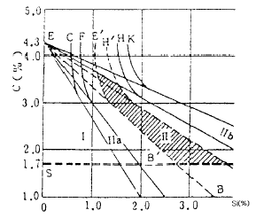
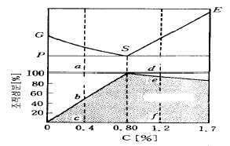
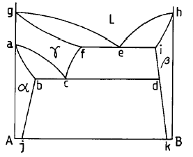
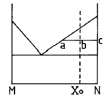
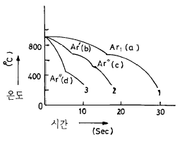
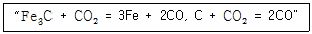

금속재료산업기사 (2002-05-26 기출문제)
1과목: 금속재료
1. 금속의 상변태와 관련된 내용이 잘못된 것은?
- 온도가 높아짐에 따라 고체가 액체 또는 기체로 변하는 것은 대부분의 금속원소에서 볼 수 있는 상태의 변화이다.
- 순철에서는 약 912℃ 및 1394℃에서 동소변태가 일어난다.
- 자기변태는 상의 변화가 아닌 에너지적 변화이다.
- 자기변태에서는 일정한 온도 범위 안에서 급격하고 비연속적인 변화가 일어난다.
(정답률: 60%)

2. 마우러 조직도에 의한 주철의 종류를 나타낸 것 중 Ⅱ구역(빗금 친부분)의 설명으로 옳은 것은?

- Pearlite + Fe3C 조직의 백주철이다.
- Pearlite + Fe3C + 흑연조직의 반주철이다.
- Pearlite + 흑연 조직의 강력한 회주철이다.
- Ferrite + 흑연 조직의 연질 반주철이다.
(정답률: 35%)
3. Fe-Fe3C-Fe3P의 3원 공정물로 재질을 취약하게 하는 주철의 조직은?
- 칠(chill)
- 스테다이트(steadite)
- 주상조직(columnar structure)
- 비드만 스테텐조직(widman statten)
(정답률: 31%)
4. 7/3황동(Cu 70% - Zn 30%)의 설명 중 옳지 않은 것은?
- α 고용체 이다.
- 연신율이 최대인 황동 이다.
- 상온 가공성이 양호 하다.
- 인장강도가 최대인 황동 이다.
(정답률: 60%)
5. Cu, Sn,흑연 분말을 적정 혼합하여 소결에 의해 제조한 분말야금용 합금으로 급유가 곤란한 부분의 베어링으로 사용되는 재료는?
- 배빗메탈(babbit metal)
- 켈멧(kelmet)
- 자마크(zamak)
- 오일라이트(oillite)
(정답률: 62%)
6. 고체 상태에서 결정구조의 변화는?
- 구조변태
- 자기변태
- 동소변태
- 분자변태
(정답률: 75%)
7. 니켈-구리의 실용합금이 아닌 것은?
- 백동
- 콘스탄탄
- 모넬메탈
- 엘린바
(정답률: 38%)
8. 열전대의 재료가 아닌 것은?
- 크로멜-알루멜
- 콘스탄탄
- 백금-로듐
- 하스텔로이
(정답률: 75%)
9. Bi, Pb, Sn, Cd 등 2개이상의 공정합금으로 이루어지며 화재경보기, 압축공기용 탱크 안전밸브, 저온땜납 등에 쓰이는 합금은?
- 저융점합금
- 초내열합금
- 내마모합금
- 초경합금
(정답률: 46%)
10. 구리의 성질 중 틀린 것은?
- 고유의 담적색이나 공기 중에서 표면이 산화되어 암적색이 된다.
- 자성체이며 전기 전도율이 나쁘다.
- 용융점은 약 1083℃ 이며, 비중은 약 8.96 이다.
- 면심입방격자이며 열전도율이 크다.
(정답률: 89%)
11. 림드강을 변형시킨 것으로서 용강을 주입 후 뚜껑을 씌워 용강의 비등을 억제시켜 림드 부분을 얇게하여 내부의 편석을 적게한 강괴는?
- 킬드강괴
- 림드강괴
- 쎄미킬드강괴
- 캐프드강괴
(정답률: 40%)
12. 형상 기억합금과 관련되는 설명이 잘못된 것은?
- 외부의 응력에 의해 소성 변형된 것이 특정온도 이상으로 가열되면 원래의 상태(모양)로 회복되는 현상을 형상 기억효과(shape memory effect)라 한다.
- 형상 기억효과를 나타내는 합금을 형상 기억합금(shape memory alloy)이라 한다.
- 형상 기억효과에 의해서 회복할 수 있는 변형량은 일정한 한도가 있다.
- Ti-Ni계 합금의 특징은 Ti과 Ni의 원자비를 1:1로 혼합한 금속간 화합물이지만 소성가공이 불가능한 특성을 갖고 있다.
(정답률: 81%)
13. 탄소량에 따른 조직의 구성을 나타낸 것 중 0.2% C강의 상온에서의 Pearlite의 양(%)은 약 얼마인가?

- 75
- 64
- 43
- 25
(정답률: 39%)
14. 의료용(치열 교정용)이나 안경테에 많이 쓰이는 것은?
- 방진 합금
- 세라믹스 합금
- 초탄성 합금
- 자성유체 합금
(정답률: 56%)
15. 요업재료와 금속과의 소결 복합체로써 내산화성, 내식성이 좋고 고온강도 및 열전도율이 높은 재료는?
- 스텔라이트(stellite)
- 서미트(cermet)
- 해면강(sponge)
- 다이아몬드(diamond)
(정답률: 43%)
16. 이온화 경향이 가장 큰 금속은?
- K
- Ba
- Ca
- Mg
(정답률: 53%)
17. 1일(日)에 용해할 수 있는 선철의 총 생산량으로 표시하는 로는?
- 용선로(Cupola)
- 용광로(B.F)
- 제강로(L.D)
- 전기로(E.F)
(정답률: 63%)
18. 선을 중심으로 하여 그 주위에 격자의 뒤틀림을 일으켜 격자가 1 열 옮아간 상태의 격자결함은?
- 공격자점
- 전위
- 격자간 원자
- 이상결함
(정답률: 52%)
19. 재료자체에 의한 진성(intrinsic)강화 메카니즘은?
- 입도강화
- 고용체강화
- 석출강화
- 분산강화
(정답률: 39%)
20. 상온에서 체심입방격자는?
- 구리
- 크롬
- 니켈
- 금
(정답률: 45%)
2과목: 금속조직
21. 내마모성만이 요구되는 주철부품으로 냉경주물이라고도 하는 것은?
- 회주철
- 칠드주철
- 가단주철
- 구상흑연주철
(정답률: 35%)
22. 그림과 같은 상태도에서 초석선은?

- ac
- gf
- abj
- idk
(정답률: 43%)
23. 배율 100배의 현미경 사진에서 1in2 내에 결정입도수가 16개일 때 ASTM 결정입도 번호는?
- 4
- 5
- 6
- 7
(정답률: 39%)
24. 고급주철의 Matrix structure(기지조직)로서 가장 바람직한 것은?
- Ferrite
- Ledeburite
- Pearlite
- Martensite
(정답률: 40%)
25. 고체상태에서 철의 동소체(allotropy)와 관련이 없는 것은?
- γ- Fe
- α -Fe
- δ -Fe
- θ -Fe
(정답률: 82%)
26. 재결정이 일어날 수 있는 임계가공도는 풀림온도와 어떠한 관계가 있는가?
- 풀림온도가 높을수록 임계가공도가 적어진다.
- 풀림온도가 높을수록 임계가공도가 커진다.
- 풀림온도가 낮을수록 임계가공도가 적어진다.
- 임계가공도는 풀림온도와 관계없이 항상 일정하다.
(정답률: 57%)
27. 편정형 합금 상태도에서 조성이 다른 두 융체가 공존하는 현상은?
- 공석
- 포정
- 편석
- 공액
(정답률: 24%)
28. 순철이 변압기용 박철판으로 많이 사용하는 가장 큰 이유는?
- 투자율이 크기 때문이다.
- 전기 전도도가 크기 때문이다.
- 용융점이 높기 때문이다.
- 항장력이 높기 때문이다.
(정답률: 39%)
29. 금속간 화합물을 설명한 것 중 옳은 것은?
- 연하고 취약하지 않다.
- 소성변형이 대단히 쉽다.
- 1차 용융체에 속하며 역수비로 되어있다.
- 일반적으로 복잡한 결정구조를 갖는다.
(정답률: 50%)
30. 다음 조직 중 혼합물에 속하는 것은?
- 페라이트
- 시멘타이트
- 오스테나이트
- 트루스타이트
(정답률: 53%)
31. α 고용체+융체→ β 고용체의 반응은?
- 공정반응
- 공석반응
- 포정반응
- 편석반응
(정답률: 50%)
32. 마텐자이트변태가 철-탄소 상태도상에서 나타나지 않는 이유로써 가장 적합한 것은?
- 확산 변태이기 때문에
- Free energy가 너무 높기 때문에
- FCC 가 BCC로 격자변태가 일어나기 때문에
- 고온에서 급냉시 격자의 비틀림에 의해 내부응력이 너무 크기 때문에
(정답률: 47%)
33. Austenite 에서 Pearlite 로 변태할 때 가장 먼저 변태하기 시작하는 곳은?
- 결정입내
- 결정입의 적당한 장소
- 결정입계
- 임의의 장소
(정답률: 91%)
34. 다음 상태도 중 Xo 조성에서 고상 : 액상의 비를 바르게 나타낸 것은?

- 고상 : 액상 = ab : bc
- 고상 : 액상 = ac : bc
- 고상 : 액상 = bc : ab
- 고상 : 액상 = bc : ac
(정답률: 38%)
35. 마텐자이트 변태의 특징이 아닌 것은?
- 변태할 때 조성의 변화가 생긴다.
- 단상에서 단상으로의 변화이다.
- 변태에 수반하여 표면의 기복이 생긴다.
- 마텐자이트 상태에는 다수의 격자결함이 존재한다.
(정답률: 36%)
36. 니켈과 구리는 상온에서 FCC격자구조를 가지며 원자반경이 각각 1.234Å와 1.275Å이다. 니켈과 구리로 합금을 만들 경우 상온 상태는?
- 칩입형 전율 고용체
- 금속간 화합물
- 치환형 환율 고용체
- 치환형 전율 고용체
(정답률: 59%)
37. 순철에서 퀴리점(curie point)은?
- A1
- A2
- A3
- A4
(정답률: 52%)
38. 선결함(line defect)에 속하는 것은?
- Vacancy
- Dislocation
- Grain boundary
- Stacking fault
(정답률: 59%)
39. 1차 고용체 생성을 좌우하는 Hume Rothery의 인자에 속하지 않는 것은?
- 원자반지름
- 전기음성도
- 결정구조
- 공공(Vacancy)
(정답률: 31%)
40. Fe-C 상태도에서 일어나는 반응 중 격자 변태가 아닌것은?
- A1 변태
- A2 변태
- A3 변태
- A4 변태
(정답률: 43%)
3과목: 금속열처리
41. 고온의 물체를 육안으로 추정하는 대신 물체의 휘도와 표준 휘도를 가진 백열 전구 필러먼트의 휘도를 수동으로 일치시켜 그 때 전구에 흐르는 전류값을 읽어내어 온도를 알아내는 것은?
- 열전 온도계
- 방사 온도계
- 광고온계
- 광전관 온도계
(정답률: 48%)
42. 구상흑연주철의 연화 풀림에서 페라이트화 풀림처리에 해당되는 것은?
- 제 1 단계 흑연화 처리
- 제 2 단계 흑연화 처리
- 제 3 단계 흑연화 처리
- 제 4 단계 흑연화 처리
(정답률: 71%)
43. 기어나 스프링 등 변형을 일으켜서는 안되는 제품 또는 얇은 물건을 금형에 고정하여 담금질 하는 방법은?
- 분사 담금질
- 인상 담금질
- 열욕 담금질
- 프레스 담금질
(정답률: 79%)
44. 열처리 냉각 방법 중 항온 냉각에 속하지 않는 것은?
- 오스템퍼링(austempering)
- 마퀜칭(marquenching)
- 인상 담금질(quenching)
- 마템퍼링(martempering)
(정답률: 65%)
45. 풀림의 목적이 아닌 것은?
- 잔류응력 제거
- 조직의 균일화
- 재료의 취성화
- 조직의 표준화
(정답률: 80%)
46. 철계 소결품의 제조공정이 맞는 것은?
- 원료분말 Fe,C→ 혼합→ 압축성형→ 소결→ 사이징
- 원료분말 Fe,C→ 혼합→ 소결→ 압축성형→ 사이징
- 원료분말 Fe,C→ 혼합→ 사이징→ 압축성형→ 소결
- 원료분말 Fe,C→ 혼합→ 압축성형→ 사이징→ 소결
(정답률: 40%)
47. 임계구역 이상의 온도에서 여러가지 속도로 담금질한 공석강의 냉각곡선에 나타난 정지점(c)에서의 조직은?

- Ferrite
- Pearlite
- Austenite
- Martensite
(정답률: 53%)
48. 표면 침탄 작업에서 과잉 침탄의 조직이 생길 때의 대책으로 맞는 것은?
- 침탄 온도를 상승시킨다.
- 과공정 조직을 만든다.
- 확산 풀림을 한다.
- 탄소를 증가시킨다.
(정답률: 70%)
49. 단조용 알루미늄 합금(Al-Si-Mg-Cu-Mn)의 열처리에서 155℃전, 후로 가열하여 실시하는 것은?
- 인공시효
- 석출시효
- 안정화시효
- 자연시효
(정답률: 41%)
50. 이온질화(ion nitriding)법의 특징 중 틀린 것은?
- 400℃ 이하의 저온에서도 질화가 가능하다.
- 질화속도가 비교적 빠르다.
- 형상에 관계없이 질화층이 균일하다.
- 특별한 가열장치가 필요없다.
(정답률: 53%)
51. 고주파 담금질 냉각방법이 아닌 것은?
- 분사 냉각
- 염욕 냉각
- 지체 냉각
- 낙하 투입 냉각
(정답률: 31%)
52. 스테인리스강의 금속 조직상 분류에 속하지 않는 것은?
- 오스테나이트계 스테인리스강
- 페라이트계 스테인리스강
- 마텐자이트계 스테인리스강
- 펄라이트계 스테인리스강
(정답률: 46%)
53. 담금질에 따른 용적변화의 설명이 가장 옳은 것은?
- 오스테나이트가 마텐자이트로 변태하는것은 수축이다.
- 오스테나이트가 페라이트로 변한것은 팽창이다.
- 완전히 펄라이트로 되면 마텐자이트보다 팽창량이 크다.
- 펄라이트 양이 많을수록 팽창량이 많아진다.
(정답률: 44%)
54. 질화처리의 특징 중 잘못 설명된 것은?
- 높은 표면 경도를 얻을 수 있다.
- 내마모성이 커진다.
- 고온강도가 높다.
- 처리강의 종류에 제한을 받지 않는다.
(정답률: 70%)
55. 다음 반응은 백선을 열처리하여 백심가단주철을 제조하는 반응을 나타낸 것이다. 900℃에서 반응상자내의 CO와 CO2의 포텐셜(potential)은 얼마가 적당한가?

- 80 : 20
- 70 : 30
- 60 : 40
- 50 : 50
(정답률: 27%)
56. 침탄용강이 구비해야할 조건이 아닌 것은?
- 저탄소강이어야 한다.
- 장시간 가열시 결정립성장이 없어야 한다.
- 표면에 결점이 없어야 한다.
- 마모성과 피로성이 우수 하여야 한다.
(정답률: 43%)
57. 강재의 가열시 결함 검출방법으로 맞지 않는 것은?
- 불꽃 시험법
- 파단면 검사
- 현미경 조직검사
- 죠미니 시험
(정답률: 48%)
58. 담금질시의 체적변화에서 용적팽창이 가장 큰 조직은?
- 마텐자이트
- 펄라이트
- 오스테나이트
- 베이나이트
(정답률: 70%)
59. 일반적으로 가열된 강재가 냉각액 중에서 냉각되는 3단계 과정의 순서가 옳은 것은?
- 1단계 : 증기막단계, 2단계 : 대류단계, 3단계 : 비등단계
- 1단계 : 증기막단계, 2단계 : 확산단계, 3단계 : 대류단계
- 1단계 : 증기막단계, 2단계 : 비등단계, 3단계 : 대류단계
- 1단계 : 비등단계, 2단계 : 대류단계, 3단계 : 증기막단계
(정답률: 71%)
60. 구리의 열처리에 가장 적합한 것은?
- 하드페이싱
- 고주파 담금질
- 재결정 풀림
- 고온 뜨임
(정답률: 40%)
4과목: 재료시험
61. 제 4과목: 재료시험 금속조직내의 상의 양을 측정하는 방법이 아닌 것은?
- 면적의 측정법
- 직선의 측정법
- 원의 측정법
- 점의 측정법
(정답률: 56%)
62. KS B 0809에서 규정하는 아이조드 충격시험편은?
- 2 호 시험편
- 3 호 시험편
- 4 호 시험편
- 5 호 시험편
(정답률: 39%)
63. 금속의 결정구조를 해석하기 위한 X 선 회절 시험의 nλ= 2dsinθ 로 표시되는 법칙은?
- 상사의 법칙(Barba´ s law)
- 밀러의 법칙(Miller´ s law)
- 브라그 법칙(Bragg´ s law)
- 마르텐스의 법칙(Martens law)
(정답률: 78%)
64. 방사선 투과사진을 암실에서 작업하는 순서로 맞는 것은?
- 정지→ 정착→ 현상→ 수세→ 건조
- 현상→ 정지→ 정착→ 수세→ 건조
- 정착→ 정지→ 현상→ 수세→ 건조
- 현상→ 정지→ 수세→ 정착→ 건조
(정답률: 38%)
65. X-선을 이용한 비파괴 시험에서 안전상 주의해야 할 사항으로 맞지않는 것은?
- 검사 시작에서 끝까지 한사람의 작업자가 장시간 작업해야 한다.
- 작업 전에 반드시 포겟 선량계와 필름 뺏지를 착용 해야한다.
- 촬영 상자내의 납(Pb) 차폐막을 확인한다.
- X-선 발생장치와 조정기는 충격을 금하고 서늘한 곳에 보관한다.
(정답률: 80%)
66. 인장시험에서 재료의 특성을 알기 위해 많이 쓰이는 일반 측정이 아닌 것은?
- 인장강도
- 항복강도
- 연신율
- 압축취성강도
(정답률: 89%)
67. 용접부의 내부 결함 검사에 가장 적합한 것은?
- 열분석시험
- 불꽃시험
- X선 방사선투과시험
- 침투탐상시험
(정답률: 71%)
68. 압축시험에서 단면 변화율(%)을 구하는 식은?
- [(A-Ao)/Ao]x100
- (A -Ao)/A
- (P/Ao)/Ao
- (Ao -A)/A
(정답률: 56%)
69. 어느 조건에서 마모가 가장 많이 일어나는가?
- 표면경도가 낮을 때
- 접촉압력이 적을 때
- 윤활상태가 좋을 때
- 접촉면이 매끄러울 때
(정답률: 80%)
70. 재료시험에서 기계적인 스트레인 측정기구를 갖춘 장치가 아닌 것은?
- 레버식 확대 장치를 사용한 것
- 레버와 다이얼 게이지를 사용한 것
- 옵티컬 레버를 사용한 것
- 샤르피 시험기를 사용한 것
(정답률: 62%)
71. 비금속 개재물 검사에 분류되지 않는 것은?
- A형
- B형
- C형
- D형
(정답률: 64%)
72. 설퍼 프린트(Sulphur Print)법에 의한 검사방법의 설명이 적합치 못한 것은?
- S의 분포를 검출한다.
- 3% 황산 수용액을 이용한다.
- 철강의 검사면에 인화지를 붙인다.
- S가 많은 것에 접한 인화지는 붉은색으로 된다.
(정답률: 30%)
73. 비커스 경도시험 방법의 특징이 아닌 것은?
- 시험하중을 절대로 임의 변화시킬 수 없다.
- 30kg의 하중에서 HV가 250일 때 HV(30)250으로 표시한다.
- 대단히 작은 재료나 연한 재료의 측정이 가능하다.
- 꼭지각이 136° 인 다이아몬드 4각추를 압입자로 사용한다.
(정답률: 38%)
74. 항절시험은 어떤 시험에 속하는가?
- 인장시험
- 충격시험
- 전단시험
- 굽힘시험
(정답률: 67%)
75. 충격 시험시 충격 흡수 에너지(E)를 구하는 식은? (α : 파단 전의 각도, β : 파단 후의 각도)
- WR(cosβ -cosα )
- WR(cosβ -1)
- WR(cosα -cosβ )
- WR(cosα -1)
(정답률: 52%)
76. 반복충격식 피로시험기는?
- 센크식
- 히사노식
- 헤이식
- 마쯔무라식
(정답률: 47%)
77. 다음 중 안전율(S)을 가장 크게 해야 하는 하중은?
- 정하중(Static load)
- 충격하중(Impulsive load)
- 반복하중(Repeated load)
- 교번하중(Alternated load)
(정답률: 70%)
78. 비파괴검사법을 선택하기 전에 고려해야할 사항으로 관련이 가장 적은것은?
- 발생하기 쉬운 불연속의 크기와 종류
- 검사적용 목적
- 부품의 표면처리 상태
- 재료의 비중
(정답률: 66%)
79. 자분탐상 시험에 관한 설명으로 관계가 없는것은?
- 자화곡선
- 통전법
- 탈자
- γ선
(정답률: 55%)
80. 압축시험에서 단면치수에 대한 길이의 비에 따라 파괴현상에 차이가 있다. 가늘고 긴 직주(slender column)를 압축하였을 때 굽히면서 파괴되는 현상은?
- 취성파괴(Brittle Fracture)
- 연성파괴(Ductile Fracture)
- 전단파괴(Shear Fracture)
- 좌굴(Buckling)
(정답률: 65%)
자기변태는 온도나 압력의 변화와는 무관하게 자기장의 변화에 따라 일어나는 변태이다. 따라서 자기변태에서는 온도 변화와는 관련이 없으며, 일정한 자기장 강도 범위 안에서 급격하고 비연속적인 변화가 일어난다.